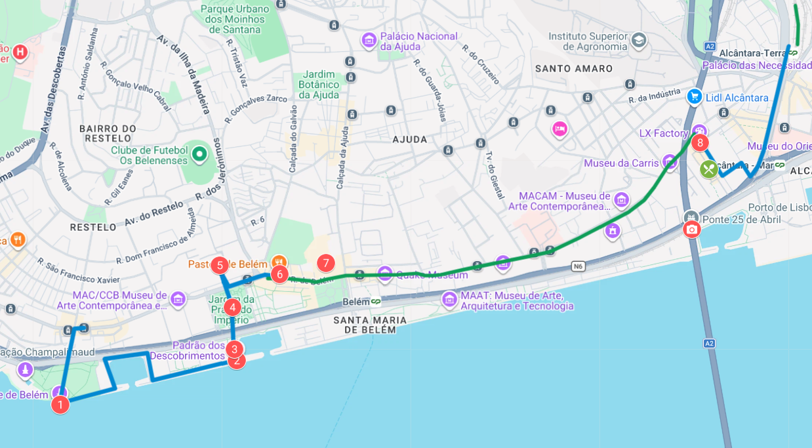

🇵🇹
Lisboa 2026 · City Break
DAN 4
Četrtek · 19. november 2026
Belém, pomorske zgodbe in še zadnji okusi
Današnja pot

Belém · ob Teju proti LX Factory
Točke dnevaZadnji dan ob reki pred odhodom domov
01
Torre de Belém
Zunanji ogled utrjenega simbola portugalske pomorske dobe.
🏰 simbol Beléma
02
Tejo, Ponte 25 de Abril in Cristo Rei
Pogled čez reko proti mostu in kipu na južnem bregu.
🌊 pogled čez Tejo
03
Rosa dos Ventos
Talni mozaik z zemljevidom portugalskih raziskovanj.
🧭 pomorske poti
04
Padrão dos Descobrimentos
Monumentalni spomenik portugalskim pomorščakom in raziskovalcem.
⛵ doba odkritij
05
Mosteiro dos Jerónimos
Manuelinska mojstrovina in ena največjih znamenitosti Beléma.
⛪ manuelinski biser
06
Pastéis de Belém
Obvezni sladki postanek pri najbolj znani belémski specialiteti.
🥧 sladki klasik
07
Palácio Nacional de Belém
Kratek zunanji pogled na rožnato predsedniško palačo.
🏛️ predsedniška palača
08
LX Factory
Nekdanji industrijski kompleks, danes poln lokalov, trgovinic in ustvarjalnosti.
🎨 ustvarjalna četrt
09
Livraria Ler Devagar
Knjigarna med starim tiskarskim strojem, knjigami in letečim kolesom.
📚 posebna knjigarna
10
Kosilo in odhod proti letališču
Zadnji portugalski okusi, nato premik proti povratnemu letu.
✈️ zaključek city breaka
Iz programa potovanja
Belém, pomorske zgodbe in še zadnji okusi
Po zajtrku in odjavi iz hotela se odpravimo v Belém. Začnemo z zunanjim ogledom Torre de Belém, nato nadaljujemo ob Teju, s pogledom proti mostu 25 de Abril in Cristo Rei. Pri Rosa dos Ventos in Padrão dos Descobrimentos odpremo zgodbo portugalskih pomorskih poti, nato skozi vrtove nadaljujemo do Mosteiro dos Jerónimos. Mogočna arhitektura in kamnito okrasje bosta dobila še sladko protiutež pri Pastéis de Belém. Mimo Palácio Nacional de Belém nadaljujemo s kratkim zunanjim pogledom na rožnato predsedniško palačo.
Za konec zamenjamo samostansko kuliso za nekdanji industrijski kompleks LX Factory. Med poslikavami, trgovinicami in lokali poiščemo tudi knjigarno Ler Devagar, v kateri knjige sobivajo s starim tiskarskim strojem in letečim kolesom. Po kosilu sledi pot proti letališču in vrnitev domov. V kovčku bo morda kakšna pločevinka sardel, na telefonu precej fotografij, v nogah pa zelo natančen zemljevid Lizbone.